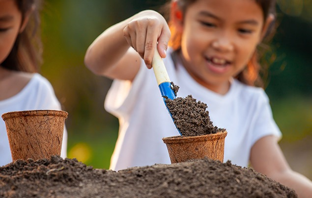
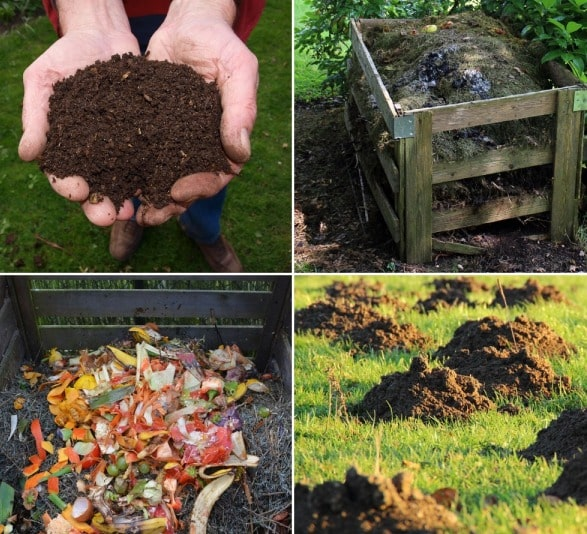

🌿 How to Start Composting Today
Composting is easier than you think! Follow these simple steps to turn your kitchen scraps into nutrient-rich compost.
Step 1: Choose Your Composting Method
🪱 Vermicomposting
Using worms – Great for small spaces & indoors
- Perfect for apartments
- Low maintenance
- No odor when done correctly
🏡 Backyard Composting
Perfect if you have a garden or yard
- Larger capacity
- Great for garden waste
- Free compost for your garden
🗑 Bokashi Composting
Uses fermentation, great for all food scraps
- Can compost meat & dairy
- Fast process
- Works in small spaces
📌 Not sure which method is right for you?
Try Our AI Chatbot!Step 2: Know What to Compost
✅ YES
- Fruit & veggie scraps
- Coffee grounds
- Eggshells
- Shredded paper
- Dry leaves
❌ NO
- Meat
- Dairy
- Oily foods
- Pet waste
- Plastic

Step 3: Maintain Your Compost
💧 Moisture
Keep it moist (like a wrung-out sponge)
🔄 Turning
Turn it every few weeks to speed up decomposition
⚖️ Balance
Add more browns if it smells bad, more greens if it's too dry
